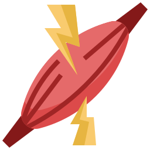
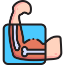
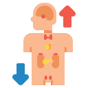
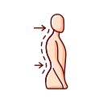

Beneficios da Musculação







É importante ressaltar que a musculação deve ser realizada de maneira segura e supervisionada, de preferência por um profissional qualificado, como um personal trainer, para garantir que os exercícios sejam realizados de forma adequada e que o programa seja adaptado às necessidades e objetivos individuais. Também é essencial dar ao corpo o tempo de recuperação adequado entre os treinos para evitar lesões. Em resumo, a musculação desempenha um papel crucial na promoção da saúde e do bem-estar geral, oferecendo benefícios físicos e mentais significativos.